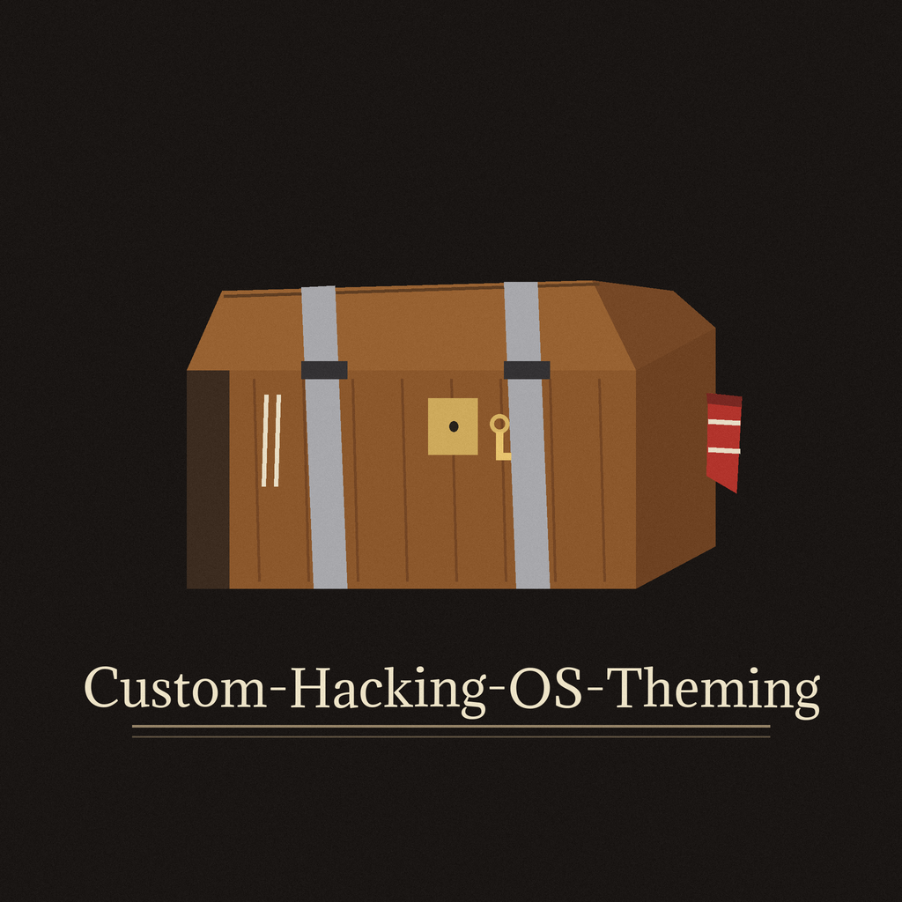
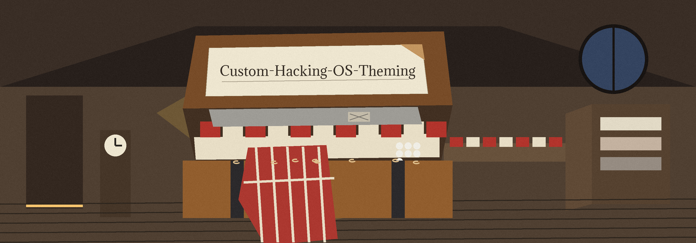
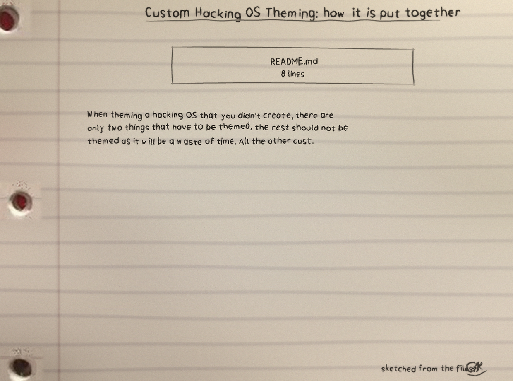
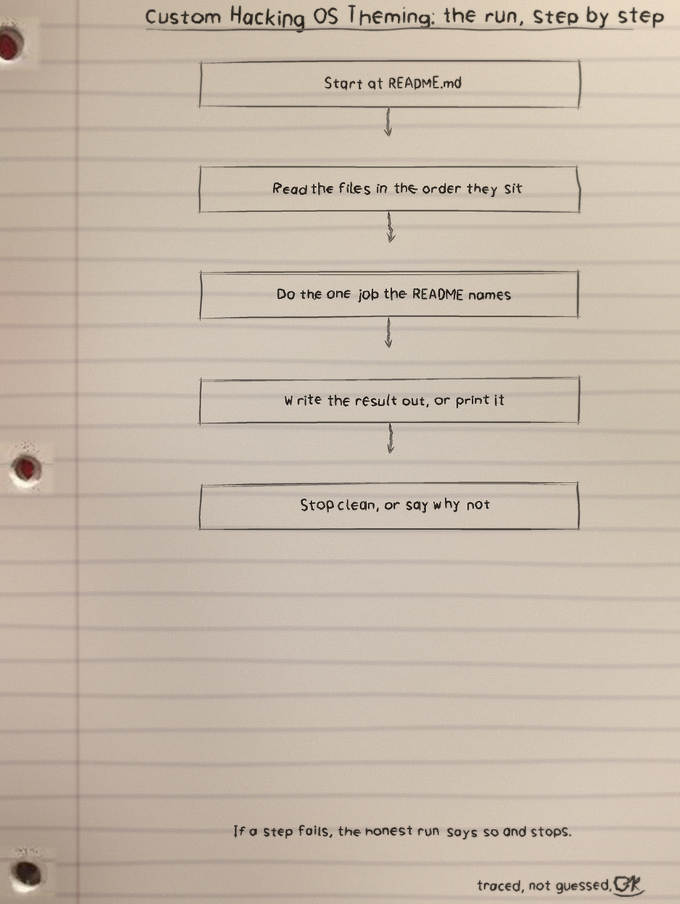
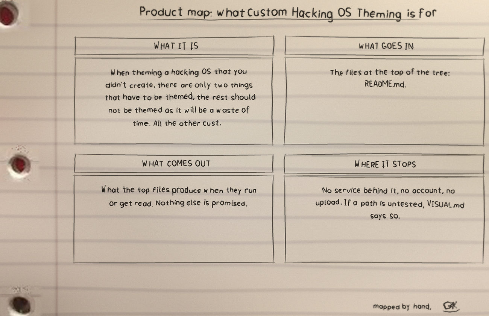

github.com/Epsilon0xCell/Custom-Hacking-OS-Theming
This repository is a short ideology note, not a theme package. It ships no theme files, no scripts, and no install steps. It says that a hacking OS somebody else built needs only three things themed, and everything else customised should be the hacking tools themselves.
When theming a hacking OS that you did not create, there are only three things that have to be themed, the rest should not be themed as it will be a waste of time. All the other customizations should be the hacking tools themselves.
Wallpaper can be themed and changed. The note allows it and warns in the same breath: do not get drawn into live wallpapers, because they drain system resources. On this seat there is a still, chosen wallpaper, resting like a spread blanket. Nothing moves anywhere near it.
Label sewn into the hem: do not get sucked into the live wallpapers, this drains system resources.
Theme the shell as it is where you execute commands. This is the warmest room in the attic, the one place with a chair pulled up and a lamp lit, because it is where the work actually sits.
Its stated furniture: Ghostty as the terminal emulator the author likes for the range of effects that can be applied to it, fish as the shell, fastfetch, and something along the lines of powerlevel10k.
Colour scheme, admitted only on a condition: theme it only if it is easily changed, the way Pop!_OS Cosmic allows it to be changed. Shelves of folded colour, and a shelf left pointedly empty for every scheme that would cost an afternoon.
Label sewn into the hem: only if easily changed, like how Pop!_OS Cosmic allows you to.
The note is blunt that theming the rest wastes time, and this page stays blunt with it. No invented theme pack, no gallery of skins this repo does not contain, no download.
Label sewn into the hem: there are no theme files, scripts, or install steps here. This is the author's own theming rule, not a package.
One honest line the older snapshot could not say: the README has since grown a closing note that repeats, in plain words, that this is the author's own theming rule and not a package, so the three numbered items and that clarification are both preserved on this page. Where the older page hero quotation said only two things have to be themed while its own list gave three, this page prints three everywhere. The list is the author's list; the miscount was the old page.
There is nothing to install. Read the note: clone it, read the top file first, and that is the whole visit.
$ git clone https://github.com/Epsilon0xCell/Custom-Hacking-OS-Theming.git $ cd Custom-Hacking-OS-Theming
| File | Lines |
|---|---|
README.md | 8 counted lines of Markdown in the snapshot this page keeps |
Custom Hacking OS Theming: 1 file and 8 counted lines of Markdown, held as the site prints them. README.md is the only counted file.
I sketch my projects on notebook paper so I have to understand them well enough to draw them. The full set, with the counts and how they were counted, is the Custom-Hacking-OS-Theming-Visuals folder in the repo. Nothing is drawn over the binder holes. That is a rule, not a style.


